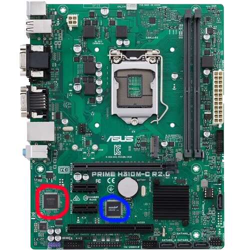

PC PART CHOOSER
Motherboards
When you purchase a motherboard you need to pay attention to 4 things: the chipset, the form factor, the socket type, and the memory limit.
Chipset
The chipset controls communication between devices in your PC. Chipsets are broken into 2 chips (hence chipSET) the North Bridge and the South Bridge. You can see the North Bridge in red and the South Bridge in blue in the image to the right. CPU manufacturers have their own chipsets, so you have to make sure you have a chipset made by the same manufacturer that made your CPU. This table will help explain which chipsets are for which processor. The table also shows the intended use for the chipset, such as high end gaming, or your grandmother surfing the web.
| Manufacturer | Chipset Name | Use |
|---|---|---|
| Intel | X299 | EPYC Gamer |
| Intel | Z370 | EPYC Gamer |
| AMD | X570 | EPYC Gamer |
| AMD | X399 | EPYC Gamer |
| AMD | X470 | EPYC Gamer |
| AMD | X370 | EPYC Gamer |
| AMD | B350 | Moderate Gamer |
| Intel | H370 | Not Gamer |
| Intel | Q370 | Not Gamer |
| Intel | B360 | Not Gamer |
| Intel | B310 | Not Gamer |
| AMD | X300 | Grandmother |
| AMD | A300 | Grandmother |
Form Factor
All motherboards have a form factor. The form factor is the size of the motherboard. The 3 most common form factors are ATX, m-ATX, and m-ITX. You should always start with an ATX motherboard when you build a computer for the first time. As you get better, you might want to try a m-ATX or m-ITX motherboard. Make sure your motherboard will fit in your case. Most ATX cases support m-ATX and m-ITX motherboards.
Socket Type
There are so many socket types, and different CPUs require different sockets. There are too many to list here, so make sure your CPU socket on your motherboard matches the socket required for your processor.
Memory Limits
Motherboards have a certain memory (RAM) limit. Most motherboards have either a 64gb or 128gb limit, but there are others that go higher, and some that don’t go as high. Make sure your motherboard supports all your RAM before you buy it. You can learn more about RAM here.